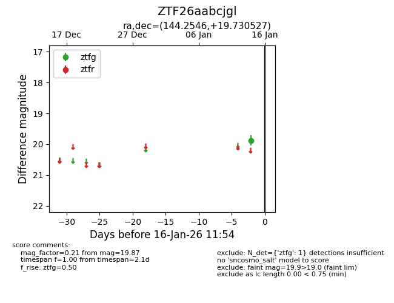
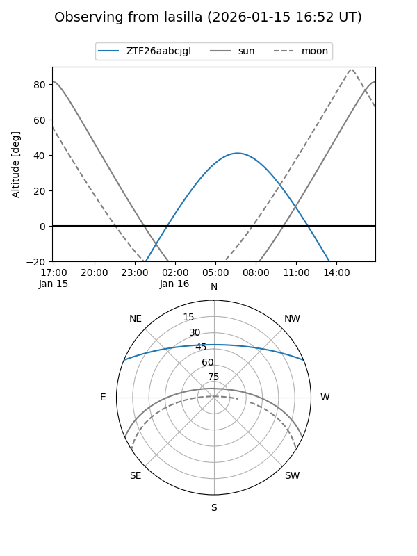
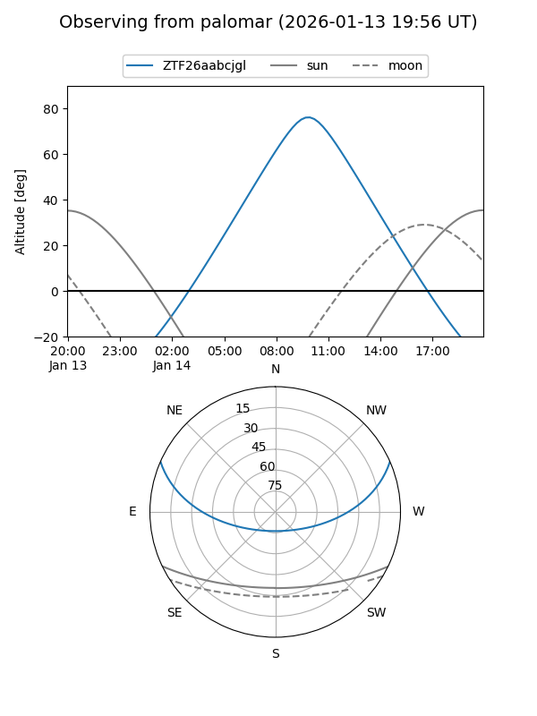

ZTF26aabcjgl
Target ZTF26aabcjgl at 2026-01-14 11:50
Aliases and brokers:
FINK: link
Lasair: link
ALeRCE: link
alt names
ZTF26aabcjgl (ztf,fink_ztf)
Coordinates:
equatorial (ra, dec) = 144.2546,+19.73053
equatorial (HMS+DMS) = 09:37:01.11,+19:43:49.90
galactic (l, b) = (211.5819,+45.06360)
Flags:
Photometry:
last ztfg=19.87
1 ztfg detections
Lightcurve

Visibility


Additional plots